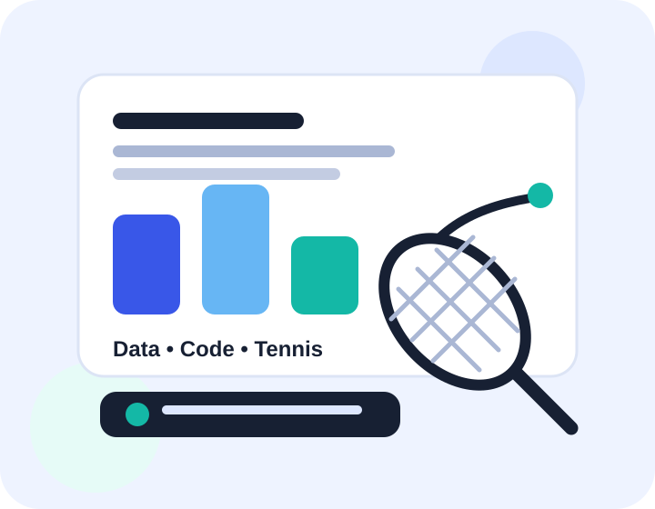

Data and automation
I enjoy using code to reduce repetitive work, test ideas properly, and present outputs in a way that is easy to understand.
I'm a student interested in data analytics, automation, markets, and building practical things that turn messy information into clear decisions. This site collects a few pieces of work, learning reflections, and personal interests in one clean place.

I enjoy using code to reduce repetitive work, test ideas properly, and present outputs in a way that is easy to understand.
My best learning usually happens when I turn concepts into a real artefact: a dashboard, a report, a small model, or a website like this.
Tennis is one of my favourite hobbies because it combines technique, discipline, timing, and constant improvement.